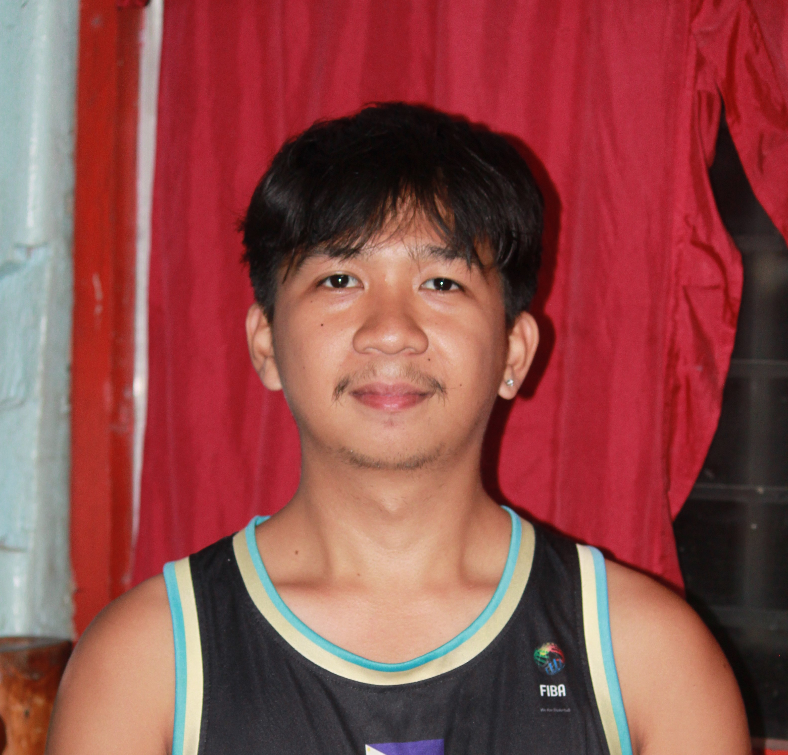

Web foundations
Building the structure and style of websites.
I'm Louisse Kyle E. Gobian — an IT student building my skills in technology, web development, and problem-solving, one project at a time.

Technology interests me because it turns ideas into things people can actually use.
I'm an IT student and aspiring developer who is exploring how websites, software, and thoughtful design can solve everyday problems. I'm using my learning journey to practice, experiment, and create projects that help me grow.
This portfolio is a work in progress — a place to share what I'm learning, document what I build, and connect with people who enjoy creating useful digital experiences.
A flexible toolkit that will evolve as I learn and build.
Building the structure and style of websites.
Practicing clean, organized, maintainable work.
Thinking about usability, layout, and visual clarity.
A space for class assignments, experiments, and personal builds.
A concept for an AI-assisted home security system combining facial recognition, predefined behavior analysis, IoT sensors, and a mobile interface.
Discuss this concept ↗This responsive portfolio concept, built with HTML, CSS, and JavaScript.
Discuss this project ↗Every project is a chance to understand something a little better.
Have an opportunity? ↗Learning core IT concepts and developing practical skills through coursework and independent practice.
Applying new knowledge through small builds, experiments, and project-based learning.
Continue learning, strengthen development fundamentals, and build projects that solve real problems.
Want to know more about my background? Add your details to the CV template and download a clean, printable copy.
The generated CV uses the information currently entered in this website. Review it before sharing.
Open to connecting with fellow learners, discussing projects, and exploring opportunities.
The best things start with a conversation.
Send a message using the form, or replace the placeholder contact details below with your preferred public contact information.
EMAILkylegobian10@gmail.com